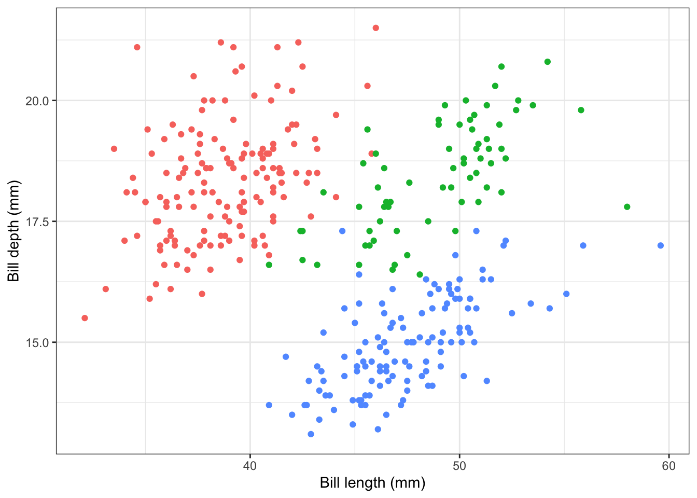

Here, we can explore how to derive and plot derivatives from their parent functions using ggplot and D()
Load the packages*
**NOTE: You’ll need to use install.packages if R cannot find them.
library(tidyverse)
── Attaching core tidyverse packages ──────────────────────── tidyverse 2.0.0 ──
✔ dplyr 1.1.4 ✔ readr 2.1.5
✔ forcats 1.0.0 ✔ stringr 1.5.1
✔ ggplot2 3.5.2 ✔ tibble 3.3.0
✔ lubridate 1.9.4 ✔ tidyr 1.3.1
✔ purrr 1.1.0
── Conflicts ────────────────────────────────────────── tidyverse_conflicts() ──
✖ dplyr::filter() masks stats::filter()
✖ dplyr::lag() masks stats::lag()
ℹ Use the conflicted package (<http://conflicted.r-lib.org/>) to force all conflicts to become errors
library(palmerpenguins)
Attaching package: 'palmerpenguins'
The following objects are masked from 'package:datasets':
penguins, penguins_raw
Finding slopes
Find the slope of f(x) = x^2 if x = 3.
#we can use the D() function directly without having to store the expression in a variablemy_deriv <-D(exp =expression(x^2), name ="x")x =3eval(my_deriv)
[1] 6
## do the same thing for: P(a) 2(3a+2)^4 05 if a = 1.2my_deriv <-D(exp =expression(2*(3*a +2)^4-5), name ="a")a =1.2eval(my_deriv)
[1] 4214.784
Making Another Penguin Plot
Now, we will use the penguins dataset in the palmerpenguins library to practice plotting data in ggplot. In data science, it is essential to visualize your data for trends and patterns to gain a better understanding of your dataset before performing any additional wrangling, tidying, etc.
# using data piping as a force of habitstr(penguins)
tibble [344 × 8] (S3: tbl_df/tbl/data.frame)
$ species : Factor w/ 3 levels "Adelie","Chinstrap",..: 1 1 1 1 1 1 1 1 1 1 ...
$ island : Factor w/ 3 levels "Biscoe","Dream",..: 3 3 3 3 3 3 3 3 3 3 ...
$ bill_length_mm : num [1:344] 39.1 39.5 40.3 NA 36.7 39.3 38.9 39.2 34.1 42 ...
$ bill_depth_mm : num [1:344] 18.7 17.4 18 NA 19.3 20.6 17.8 19.6 18.1 20.2 ...
$ flipper_length_mm: int [1:344] 181 186 195 NA 193 190 181 195 193 190 ...
$ body_mass_g : int [1:344] 3750 3800 3250 NA 3450 3650 3625 4675 3475 4250 ...
$ sex : Factor w/ 2 levels "female","male": 2 1 1 NA 1 2 1 2 NA NA ...
$ year : int [1:344] 2007 2007 2007 2007 2007 2007 2007 2007 2007 2007 ...
penguins %>%ggplot(aes(x = bill_length_mm, y = bill_depth_mm, col =factor(species))) +geom_point() +theme_bw() +labs(x ="Bill length (mm)", y ="Bill depth (mm)", col ="Species") +guides(col = F)
Warning: The `<scale>` argument of `guides()` cannot be `FALSE`. Use "none" instead as
of ggplot2 3.3.4.
Warning: Removed 2 rows containing missing values or values outside the scale range
(`geom_point()`).

Sometimes, points can lie on top of each other and need to be “shaken”. We’ll use geom_jitter() to do this.
penguins %>%ggplot(aes(x = bill_length_mm, y =factor(species), col =factor(species))) +geom_jitter() +theme_bw() +labs(x ="Bill length (mm)", y ="Species", title ="Bill length by penguin species") +guides(col = F)
Warning: Removed 2 rows containing missing values or values outside the scale range
(`geom_point()`).